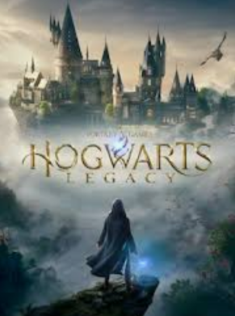
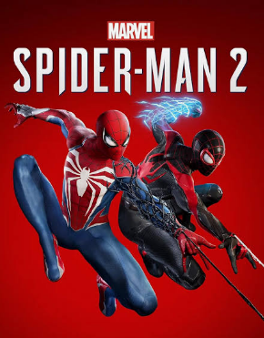
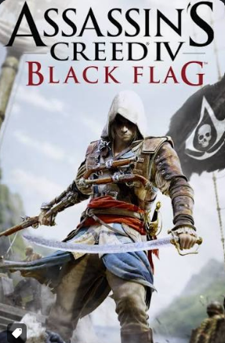
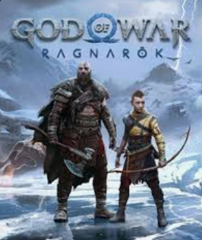
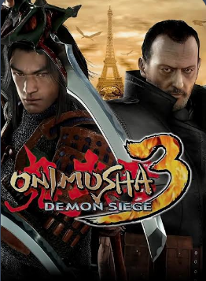
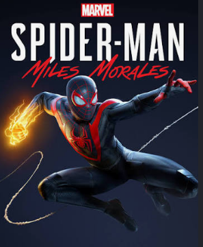

My Collection
These are my favorite video games that I have played and completed so far.

Hogwarts Legacy
Game | 2023 | RPG | Bethesda Softworks
This is the game that I have been waiting for since I was a kid. I have always wanted to be a wizard and this game finally let me live out that dream. The world is beautiful and the story is engaging. I loved being able to explore Hogwarts and the surrounding areas, and the combat system was fun and challenging. I can't wait to see what the developers do with this franchise in the future!

Spider-Man 2
Game | 2023 | Action-adventure | Insomniac Games
This game exceeded my expectations in every way. The story was compelling, the characters were well-developed, and the gameplay was smooth and engaging. I particularly enjoyed the new abilities and the expanded open world. It's a fantastic addition to the Spider-Man franchise!

Assassin's Creed Black Flag
Game | 2013 | Action-adventure | Ubisoft
This game brought a fresh take to the Assassin's Creed franchise with its naval combat and open-world exploration. The story was engaging, and the gameplay was both challenging and rewarding. It's a great entry point for newcomers to the series.

God of War: Ragnarök
Game | 2022 | Action-adventure | Santa Monica Studio
This game delivered an incredible conclusion to the God of War saga. The story was emotionally powerful, the characters were well-developed, and the gameplay was intense and satisfying. I particularly enjoyed the new abilities and the expanded Norse mythology setting. It's a masterpiece of game design.

Onimusha: Demon Siege
Game | 2001 | Action-adventure | Capcom
This game combined elements of action and adventure with a unique blend of historical and supernatural themes. The combat system was engaging, and the story was compelling. It's a classic example of a well-crafted action game.

Spider-Man: Miles Morales
Game | 2020 | Action-adventure | Insomniac Games
This game offered a fresh take on the Spider-Man franchise with its engaging story and stunning visuals. The gameplay was fluid and satisfying, and the character development was well-done. It's a great addition to the series.